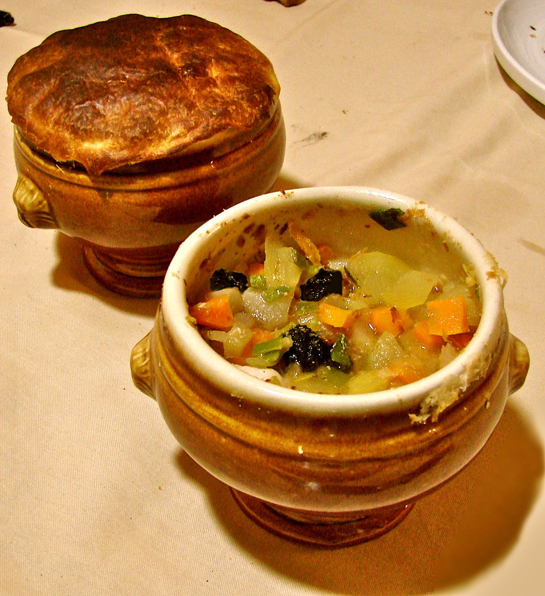

Soupe aux truffes V.G.E.*

- Lexique :
- Gratinée lyonnaise
- Bol à soupe allant au four
- Matignon:
- Fondue de légumes utilisée dans un grand nombre de préparations.
- Ingrédients pour une gratinée lyonnaise :
- 2 cuillères à soupe de matignon
- 30 g de truffes fraîches
- 20 g de foie gras frais
- 25 cl de consommé de boeuf concentré
- 60 g de pâte feuilletée
- 1 jaune d'oeuf battu
- Méthode :
- Dans chaque gratinée lyonnaise
mettre le matignon, les truffes coupées en lamelles irrégulières,
le foie gras coupé en dés et le consommé de boeuf.
- Dorer avec le jaune d'oeuf la pâte abaissée finement et en recouvrir
les bols en faisant bien adhérer.
- Placer les bols dans un four préalablement chauffé à 200°C.
La cuisson est très rapide. La pâte feuilletée, en gonflant, prend une belle couleur dorée.
- Utiliser une cuillère à soupe pour rompre la pâte qui tombe dans la soupe.
* Plat créé par Paul Bocuse à l'occasion de la remise de la légion d'honneur par Valéry Giscard d'Estaing en 1975.

Photo © Classiccardinal (Own work) [CC BY-SA 3.0 (http://creativecommons.org/licenses/by-sa/3.0)], via Wikimedia Commons
Recette empruntée à P. Bocuse, "Bocuse à la carte - Menus pour la table familiale", Flammarion, 1986